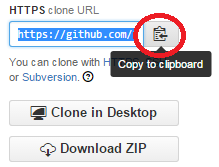

Create a Github account.
Login. Create a new repository. Call it Camp.

Initialize your repository with a README, and select Processing from the list.

Copy your repository's URL.
Open Git Bash from the Start Menu.
Create a new directory on the H: drive. Call it git.
cd /h/
mkdir git
cd git
Clone your project.
git clone <your url goes here> <your name goes here>
example: git clone https://github.com/Clark/Camp.git MyCampProject
Go into your project in Git Bash.
cd <your name from above goes here>
Your shell should look like this.